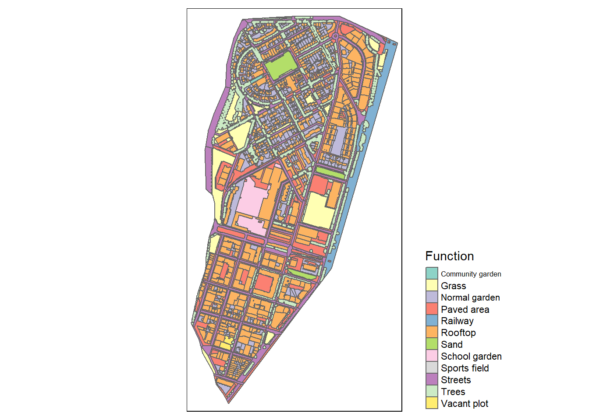
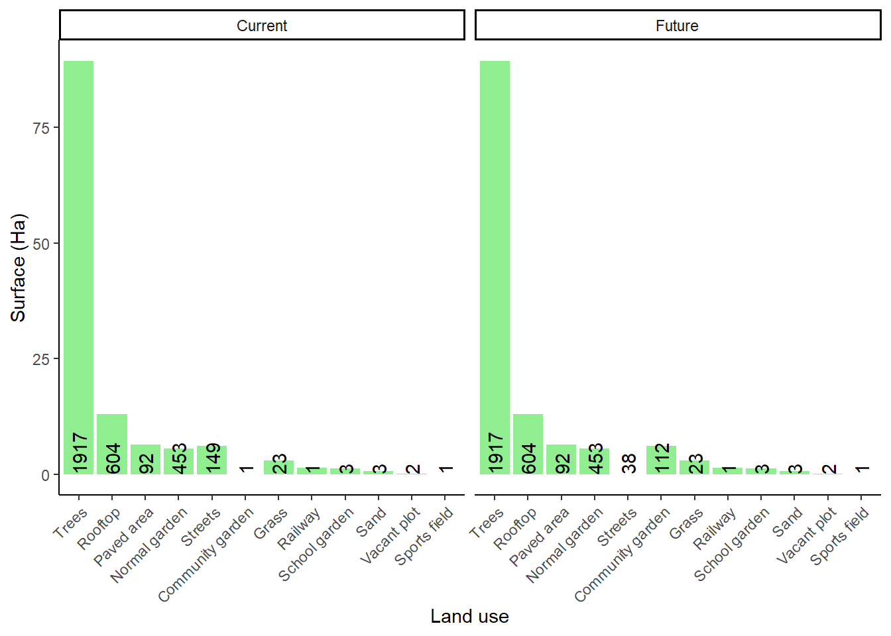
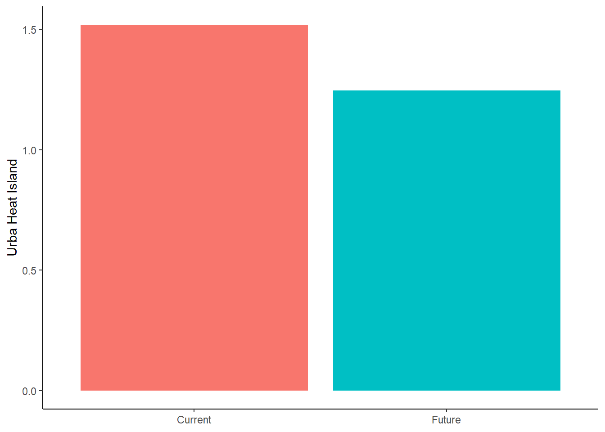
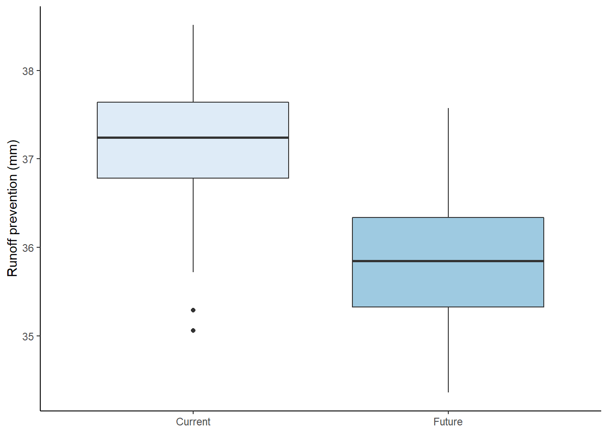
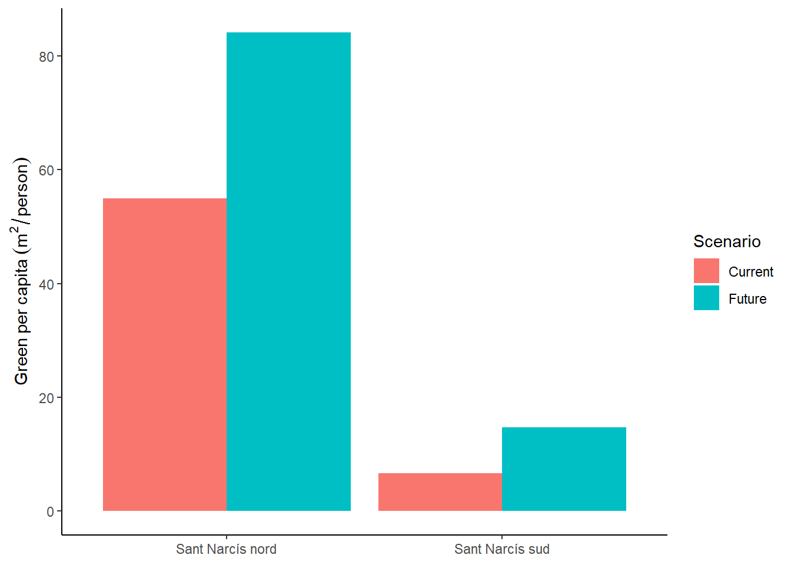
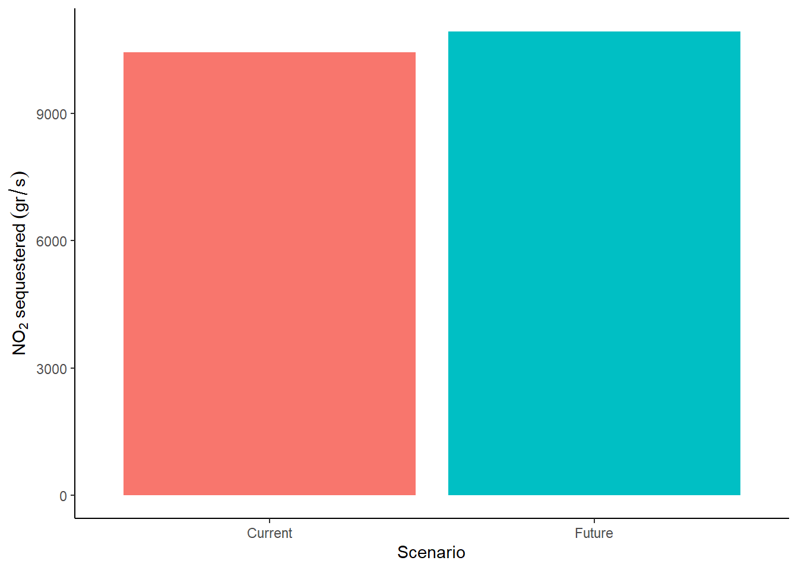
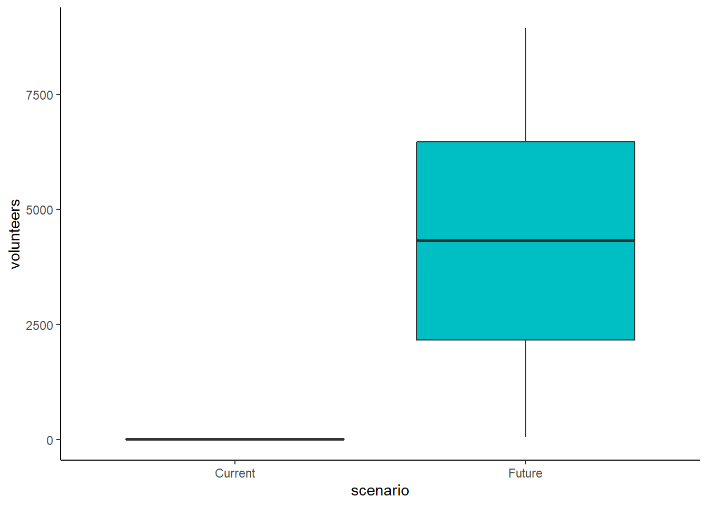
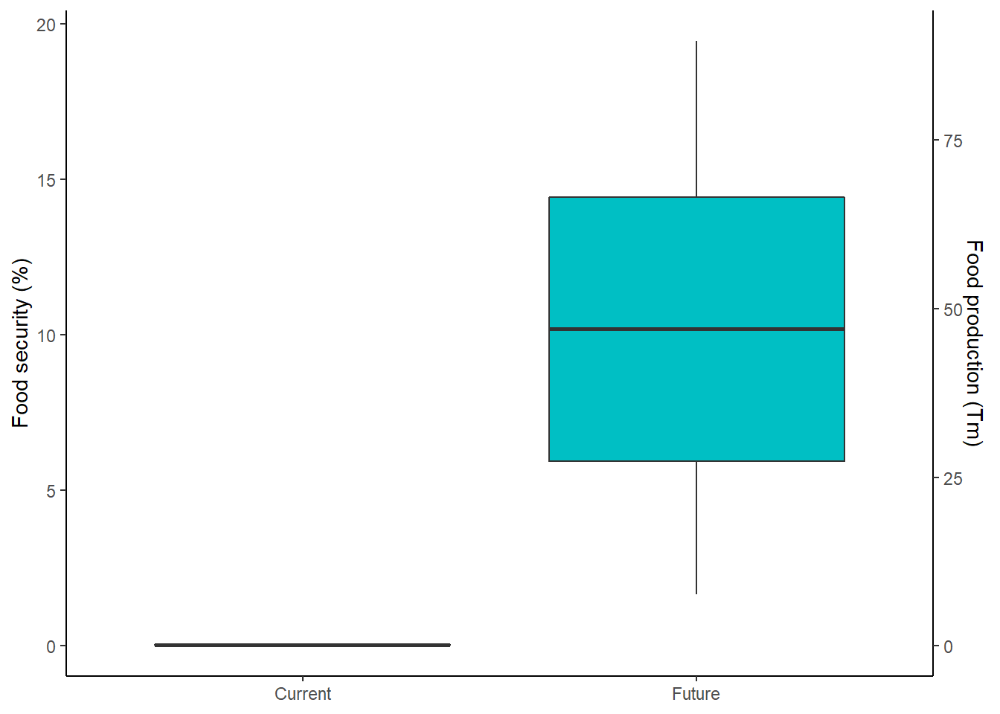

MSN scenarios
Land uses of Sant Narcis
As expected, rooftops (i.e. building footprints) are the most frequent land use and the one with the greatest extension. However, only 39 rooftops are flat, and thus potential urban gardens. And from those, only 6 have more than 50 m2 of flat surface. So, we will focus on gardens on the ground.
Urban garden scenarios
We simulated the current scenario and a future scenario where 111 streets in Sant Narcís were converted to community gardens (streets with less than 100 m2 were discarded). Each community garden is supposed to occupy the 50% of the street’s surface. Thus, while current scenario has 1 community garden, the future scenario has 112.

Urban heat island
The future scenario will suppose a reduction of 0.27 degrees of average temperature in the neighbourhood.

Runoff prevention
The difference in runoff prevention between current and future scenario is 1.36 mm. assuming a rain event of 85 l/day and that some community gardens have rainwater harvesting systems, randomly distributed between 0 and 45 m3.

Distance to closest green area
World Health Organization recommends that any residence should be closer than 300 meters from the closest public green area larger than 0.5 ha. In the future scenario, all community gardens are smaller than this. Therefore, the distance to the closest green area is not affected by the creation of community gardens.
Hence, in both scenario the average distance to closest green area larger than 0.5 ha is 249.7 meters. Moreover, 36.9% of the residences in Sant Narcís are further than 300 meters from their closest green area (larger than 0.5 ha).
Green per capita
This indicator not only considers public green areas, but also private green areas (gardens) to compensate those areas with more dense urban fabric.

Sant Narcís nord is less dense than the southern part and this is reflected in the indicator. However, green per capita increases in both districts. Percentually, it increases more in Sant Narcís sud (123.78%) than in the northern part (53.02%).
Dioxid nitrogen (NO2) sequestered by urban green
The future scenario would have the potential to sequester 4.9 gr/second of NO2 more than the current scenario.

Volunteers involved in urban agriculture
Despite the uncertainty in estimating the number of volunteers, the indicators clearly shows how the volunteers involved in community gardens in the future scenario is relevant. In the most optimistic estimations, it would suppose that neighbours from other parts in the city should be involved in the project to assume all the necessary manwork.
While in the current scenario the number of estimated volunteers is between 2 and 33, the number of volunteers estimated in the future scenario is between 475 and 8191.

Food security
The food security is considered the ratio between the food produced and consumed in the neighbourhood. The current scenario, in average, might produce the 0.04% of the food consumed (it supposes a production of 192 kg/year. Whereas, this value increases to 10.19% in the future scenario, assuming a production of 47 Tm/year.
